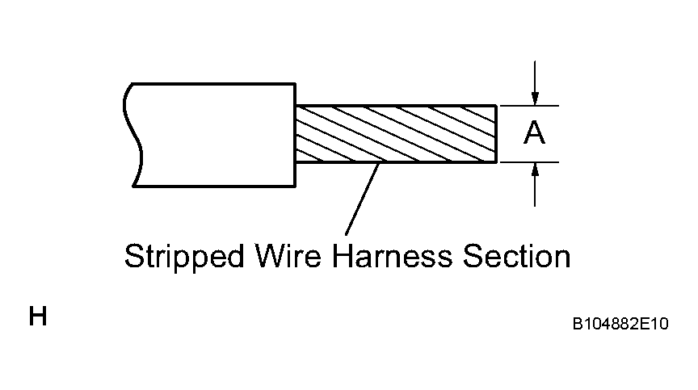

Front Passenger Airbag Assembly: Disposal
HINT:
When scrapping a vehicle equipped with an SRS or disposing of the front passenger airbag assembly, be sure to deploy the airbag first in accordance with the procedure described below. If any abnormality occurs with the airbag deployment, contact the SERVICE DEPT. of TOYOTA MOTOR SALES, U.S.A., INC.
- Never dispose of a front passenger airbag with an inactivated airbag.
- The airbag produces a loud, exploding sound when it activates. Perform the operation where it will not be a nuisance to people nearby.
- When activating the airbag, always use the specified SST (SRS airbag deployment tool).
- Perform procedures in a place away from electrical interference.
- When activating the airbag, stand at least 10 m (33 ft.) away from the airbag.
- The airbag becomes very hot when it is deployed. Do not touch it for at least 30 minutes after activation.
- Use gloves and safety glasses when handling a deployed airbag.
- Do not apply water to a deployed airbag.
- Always wash your hands with water after completing the operation.
- DISPOSE OF FRONT PASSENGER AIRBAG ASSEMBLY TOGETHER WITH VEHICLE
HINT:
Prepare a battery as the power source to deploy the airbag.
- Check if SST is functioning properly.
SST 09082-00700
- Connect the SST's red clip to the positive (+) battery terminal and the black clip to the negative (-) battery terminal.
HINT:
The yellow connector will be used to connect to another SST in a later step.
- Press the SST activation switch, and check that the LED of the SST activation switch illuminates.CAUTION: If the LED illuminates when the activation switch is not pressed, SST may have a malfunction, in which case that SST should not be used.
- Disconnect SST from the battery.
- Connect the SST's red clip to the positive (+) battery terminal and the black clip to the negative (-) battery terminal.
- Follow the "Precaution" (see AIRBAG SYSTEM ).
- Disconnect the cable from the negative (-) battery terminal.CAUTION: Wait at least 90 seconds after disconnecting the cable from the negative (-) battery terminal to prevent airbag and seat belt pretensioner activation.
- Remove the No. 1 instrument panel speaker (See REMOVAL ).
- Install SST.
- Disconnect the front passenger airbag connector.NOTE: When handling the airbag connector, do not damage the airbag wire harness.
- Connect SST (A) to SST (B). Then connect SST (B)'s connector to the cable.
SST 09082-00700, 09082-00780
NOTE: To avoid damaging the SST connector and wire harness, do not lock the secondary lock of the twin lock. - Move SST at least 10 m (33 ft.) away from the front side window.
- Maintain a small opening in the front side window for the SST wire harness. Close the remaining windows of the vehicle. Close all doors.NOTE: Take care not to damage the SST wire harness.
- Connect the SST red clip to the positive (+) battery terminal and the black clip to the negative (-) battery terminal.
- Disconnect the front passenger airbag connector.
- Deploy the airbag.
- Check that no one is inside the vehicle or within a 10 m (33 ft.) radius of the vehicle.
- Press the SST activation switch and deploy the airbag.CAUTION:
- When deploying the airbag, make sure that no one is near the vehicle.
- The airbag becomes extremely hot when it is deployed. Do not touch it for at least 30 minutes after deployment.
- Use gloves and safety glasses when handling a deployed airbag.
- Do not apply water to a deployed airbag.
- Always wash your hands with water after completing the operation.
HINT:
The airbag is deployed as the SST activation switch LED illuminates.
- Check if SST is functioning properly.
- DISPOSE OF ONLY FRONT PASSENGER AIRBAG ASSEMBLY NOTE:
- When disposing of the airbag, never use the customer's vehicle to deploy the airbag.
- Be sure to follow the procedure detailed below when deploying the airbag.
HINT:
Prepare a battery as the power source to deploy the airbag.
- Check if SST is functioning properly.
SST 09082-00700
- Connect the SST red clip to the positive (+) battery terminal and the black clip to the negative (-) battery terminal.
HINT:
The yellow connector will be used to connect to another SST in a later step.
- Press the SST activation switch, and check that the LED of the SST activation switch illuminates.CAUTION: If the LED illuminates when the activation switch is not pressed, SST may have a malfunction, in which case that SST should not be used.
- Disconnect SST from the battery.
- Connect the SST red clip to the positive (+) battery terminal and the black clip to the negative (-) battery terminal.
- Remove the front passenger airbag (see FRONT PASSENGER AIRBAG ASSEMBLY
).CAUTION:
- When removing the airbag, work must be started at least 90 seconds after the ignition switch is turned OFF and after the cable is disconnected from the negative (-) battery terminal.
- When storing the airbag, keep the airbag deployment side facing upward.
- Using service wire harnesses for the vehicle, tie down the airbag to a tire.
Wire harness:
A:
Stripped wire harness section
1.25 mm 2 or more (0.0019 in. 2 or more)
NOTE: Use a tire that you are planning to throw away, as the airbag deployment may damage the tire.
Courtesy of © TOYOTA, LICENSE AGREEMENT TMS1002CAUTION: Do not use wire harnesses that are too thin or any other substitute items to tie down the front passenger airbag assembly. They may snap when the airbag deploys. Always use vehicle wire harnesses that have an area of at least 1.25 mm2 (0.0019 in.2 ).HINT:
To calculate the area of the stripped wire harness section:
Area = 3.14 x Diameter2 /4
- Position the airbag inside the tire so that the brackets contact the tire.
Tire size:
Width minimum: 185 mm (7.28 in.)
Inner diameter minimum: 360 mm (14.17 in.)
- Wind 3 wire harnesses at least twice around the airbag brackets and tire.
CAUTION:
- Tightly wind the wire harnesses around the brackets so that there is no slack.
- Make sure that the wire harnesses are tight. If there is slack in a wire harness, the airbag may come loose when it is deployed.
- Always tie down the airbag with the airbag deployment side facing inside the tire.
- Position the airbag inside the tire so that the brackets contact the tire.
- Install SST.
- Connect the SST connector to the airbag.
SST 09082-00780
- Connect the SST connector to the airbag.
- Place the tires.
- Place at least 2 tires under the tire to which the airbag is tied.
- Place at least 2 tires on top of the tire to which the airbag is tied. The top tire should have a disc wheel installed.NOTE:
- Do not place the SST connector under the tire as the connector may be damaged.
- Use a disc wheel that you are planning to throw away, as the airbag deployment will damage the disc wheel.
- Use tires that you are planning to throw away, as the airbag deployment may damage the tires.
- Tie the tires together with 2 wire harnesses.CAUTION: Make sure that the wire harnesses are tight. If there is slack in a wire harness, the tires may come loose when the airbag is deployed.
- Install SST.
- Connect the SST connector.
SST 09082-00700
NOTE: To avoid damaging the SST connector and wire harness, do not lock the secondary lock of the twin lock. Also, secure some slack for the SST wire harness inside the tire.
- Connect the SST connector.
- Deploy the airbag.
- Connect the SST red clip to the positive (+) battery terminal and the black clip to the negative (-) battery terminal.
- Check that no one is within a 10 m (33 ft.) radius of the airbag.
- Press the SST activation switch and deploy the airbag.CAUTION: When deploying the airbag, make sure that no one is near the tires.
HINT:
The airbag is deployed as the SST activation switch LED illuminates.
- Dispose of the airbag.CAUTION:
- The airbag becomes extremely hot when it is deployed. Do not touch it for at least 30 minutes after deployment.
- Use gloves and safety glasses when handling a deployed airbag.
- Do not apply water to a deployed airbag.
- Always wash your hands with water after completing the operation.
- Remove the airbag from the tire.
- Place the airbag in a plastic bag, tie it tightly and dispose of it in the same way as other general parts.